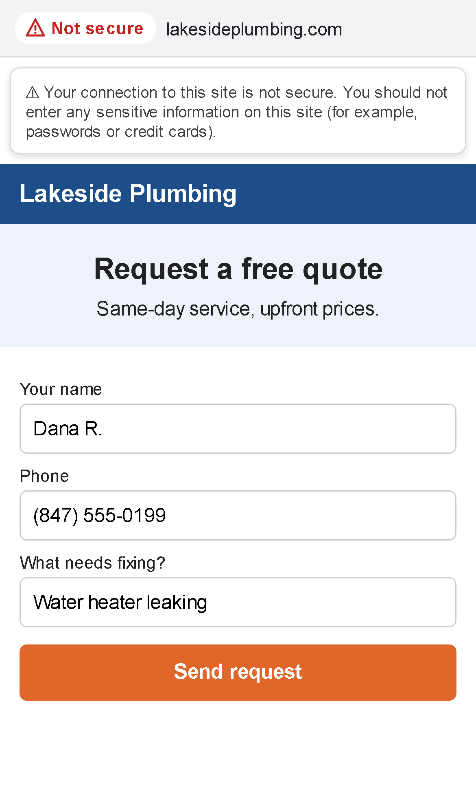
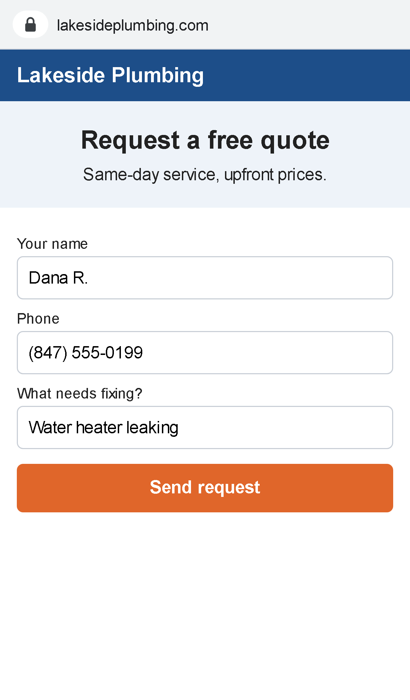

Website marked "Not secure": before and after
The same quote-request page on the same iPhone. On the left it is served
over plain http://, so Chrome puts a red "Not secure" label in
the address bar, and its page-info panel tells the customer not to enter
sensitive information. That is the moment a customer with a leaking water
heater calls the next plumber instead. On the right the same page is served
over https://: no label, nothing to explain.


The fix, by where the site is hosted
Most hosts give a free certificate (Let's Encrypt). Turn it on, then send
every http:// visitor to https:// so nobody who
types the bare address lands on the "Not secure" copy.
Apache / cPanel hosting (GoDaddy, Bluehost, HostGator and similar):
enable the free SSL in cPanel, then at the top of .htaccess:
RewriteEngine On
RewriteCond %{HTTPS} off
RewriteRule ^ https://%{HTTP_HOST}%{REQUEST_URI} [L,R=301]
Nginx:
server {
listen 80;
server_name example.com www.example.com;
return 301 https://$host$request_uri;
}
WordPress: after the certificate is on, set both addresses under
Settings → General to https://, then add the redirect above
(or the host's "Force HTTPS" switch).
Cloudflare: SSL/TLS → Edge Certificates → "Always Use HTTPS".
Wix, Squarespace, Shopify: HTTPS is a switch in the domain or SSL
settings; if it is off, turn it on and the platform redirects for you.
Part of the page still blocked?
If the site is on https but a stylesheet, script or image is still linked
as http://, the browser blocks or downgrades it ("mixed
content"): the layout breaks or the padlock disappears. The fix is to change
each such link to https:// (or to a relative path) in the theme
or the page editor:
http://example.com/style.css -> https://example.com/style.css
I check the home page and the contact page in a real browser before calling it done.
The page above is a sample built for this demo, not a real business. The address bar is an illustration of how Chrome labels http and https pages; screenshots taken with an emulated iPhone 13. More before/after examples: all demos.